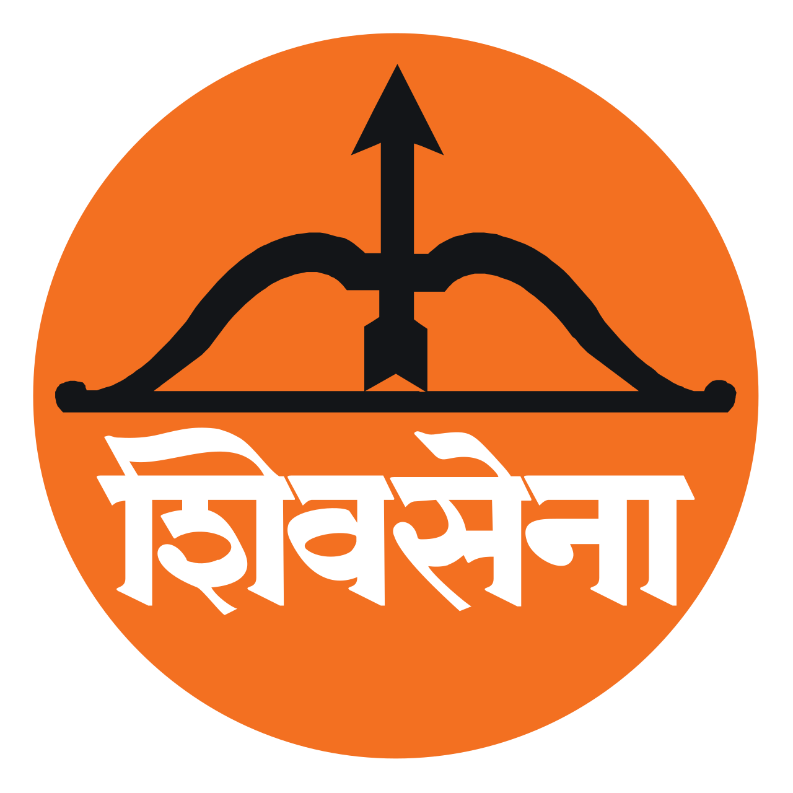
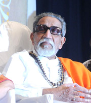
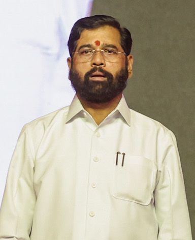
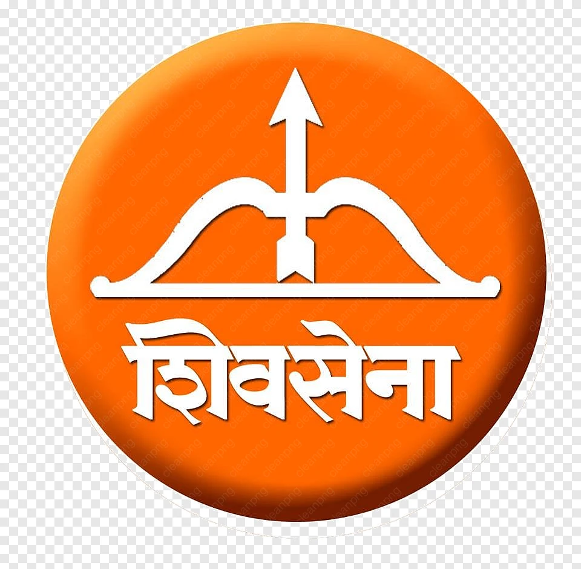

An extensive exploration of a prominent regional and right-wing political party, examining its history, ideology, and impact on Maharashtra and national politics.
Rishu, Siddhi, Omkar, and Radha
The party rose to prominence by winning control of the Brihanmumbai Municipal Corporation (BMC), cementing its stronghold over India's financial capital.
Shiv Sena formed its first coalition government in Maharashtra alongside the BJP, appointing Manohar Joshi as the first Shiv Sena Chief Minister.
The party became a founding member of the National Democratic Alliance (NDA) and held prominent ministerial portfolios in the central government.
A dominant force in local and state governance for decades.
The party's ideology is a powerful blend of regional pride and right-wing cultural nationalism.
The "sons of the soil" doctrine. It fiercely prioritizes the rights, culture, and employment opportunities of Marathi-speaking residents of Maharashtra over migrants.
From the 1980s onwards, the party strongly embraced a right-wing, pro-Hindu stance, positioning itself as a militant defender of Hindu interests and advocating for a "Hindu Rashtra".

The charismatic founder and guiding patriarch. He commanded massive influence without ever holding official office until his death in 2012.
Son of the founder. He took over the party and successfully served as the Chief Minister of Maharashtra (2019–2022).

A grassroots leader who led a historic rebellion in 2022. He is the current Chief Minister of Maharashtra.
Eknath Shinde led a rebellion with a majority of MLAs against Uddhav Thackeray's leadership, dissatisfied with the party's alliance with Congress and NCP.
This massive shift caused the party to officially split into Shiv Sena (UBT) led by Uddhav Thackeray and Shiv Sena led by Eknath Shinde.
In 2023, the EC recognized Shinde's faction as the "real" Shiv Sena, allotting them the original name and traditional "Bow and Arrow" symbol.

Shiv Sena's remarkable journey from a localized grassroots movement advocating for the rights of the Marathi manoos to a powerful proponent of Hindutva showcases its immense impact on Maharashtra's political landscape. Despite recent splits and controversies, it remains an undeniable and defining force in state and national politics.
We hope this group discussion provided valuable insights into the history, ideology, and political journey of the Shiv Sena.
Presented By: